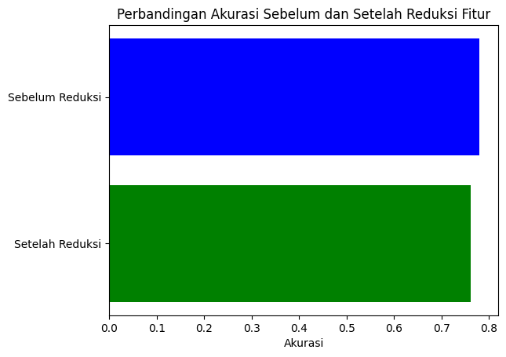
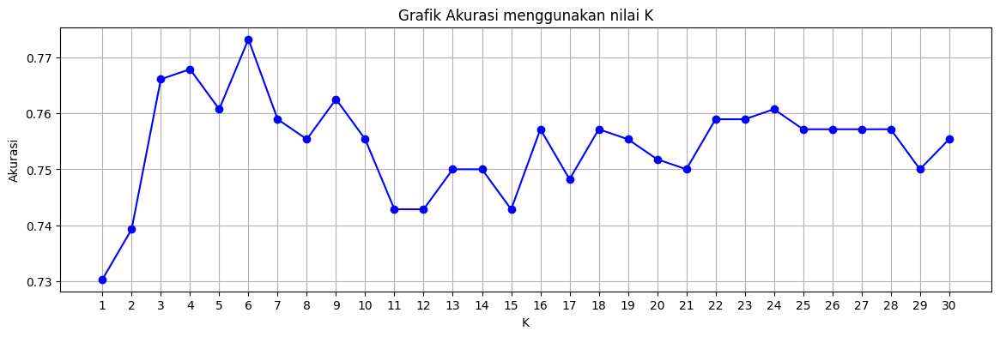

from google.colab import drive
drive.mount("/content/drive")
---------------------------------------------------------------------------
KeyboardInterrupt Traceback (most recent call last)
<ipython-input-1-bf1647b42bbd> in <cell line: 2>()
1 from google.colab import drive
----> 2 drive.mount("/content/drive")
/usr/local/lib/python3.10/dist-packages/google/colab/drive.py in mount(mountpoint, force_remount, timeout_ms, readonly)
101 def mount(mountpoint, force_remount=False, timeout_ms=120000, readonly=False):
102 """Mount your Google Drive at the specified mountpoint path."""
--> 103 return _mount(
104 mountpoint,
105 force_remount=force_remount,
/usr/local/lib/python3.10/dist-packages/google/colab/drive.py in _mount(mountpoint, force_remount, timeout_ms, ephemeral, readonly)
130 )
131 if ephemeral:
--> 132 _message.blocking_request(
133 'request_auth', request={'authType': 'dfs_ephemeral'}, timeout_sec=None
134 )
/usr/local/lib/python3.10/dist-packages/google/colab/_message.py in blocking_request(request_type, request, timeout_sec, parent)
174 request_type, request, parent=parent, expect_reply=True
175 )
--> 176 return read_reply_from_input(request_id, timeout_sec)
/usr/local/lib/python3.10/dist-packages/google/colab/_message.py in read_reply_from_input(message_id, timeout_sec)
94 reply = _read_next_input_message()
95 if reply == _NOT_READY or not isinstance(reply, dict):
---> 96 time.sleep(0.025)
97 continue
98 if (
KeyboardInterrupt:
%cd /content/drive/My Drive/psd/dataset psd
/content/drive/My Drive/dataset psd
import os
import librosa
import numpy as np
import pandas as pd
from scipy.stats import skew, kurtosis, mode
from sklearn.preprocessing import StandardScaler, MinMaxScaler
from sklearn.neighbors import KNeighborsClassifier
from sklearn.metrics import accuracy_score
import pickle
# Fungsi untuk menghitung statistik audio
def calculate_statistics(audio_path):
y, sr = librosa.load(audio_path)
# Menghitung statistik
mean = np.mean(y)
std_dev = np.std(y)
max_value = np.max(y)
min_value = np.min(y)
median = np.median(y)
skewness = skew(y)
kurt = kurtosis(y)
q1 = np.percentile(y, 25)
q3 = np.percentile(y, 75)
mode_value, _ = mode(y)
iqr = q3 - q1
zcr_mean = np.mean(librosa.feature.zero_crossing_rate(y=y))
zcr_median = np.median(librosa.feature.zero_crossing_rate(y=y))
zcr_std_dev = np.std(librosa.feature.zero_crossing_rate(y=y))
zcr_kurtosis = kurtosis(librosa.feature.zero_crossing_rate(y=y)[0])
zcr_skew = skew(librosa.feature.zero_crossing_rate(y=y)[0])
rms = np.sum(y**2) / len(y)
rms_median = np.median(y**2)
rms_std_dev = np.std(y**2)
rms_kurtosis = kurtosis(y**2)
rms_skew = skew(y**2)
return [mean, std_dev, max_value, min_value, median, skewness, kurt, q1, q3, mode_value, iqr, zcr_mean, zcr_median, zcr_std_dev, zcr_kurtosis, zcr_skew, rms, rms_median, rms_std_dev, rms_kurtosis, rms_skew]
# Daftar folder yang akan dianalisis
folders = [
'YAF_sad', 'YAF_pleasant_surprised', 'YAF_neutral', 'YAF_happy', 'YAF_fear', 'YAF_disgust', 'YAF_angry',
'OAF_Sad', 'OAF_Pleasant_surprise', 'OAF_neutral', 'OAF_happy', 'OAF_Fear', 'OAF_disgust', 'OAF_angry'
]
# Membuat DataFrame untuk menyimpan hasil
data = []
for folder in folders:
folder_path = f'{folder}'
for filename in os.listdir(folder_path):
if filename.endswith('.wav'):
audio_path = os.path.join(folder_path, filename)
statistics = calculate_statistics(audio_path)
data.append([folder, filename] + statistics)
# Membuat DataFrame dari data
columns = ['Label', 'File'] + ['Mean', 'Std Dev', 'Max', 'Min', 'Median', 'Skew', 'Kurtosis', 'Q1', 'Q3', 'Mode', 'IQR', 'ZCR Mean', 'ZCR Median', 'ZCR Std Dev', 'ZCR Kurtosis', 'ZCR Skew', 'RMSE', 'RMSE Median', 'RMSE Std Dev', 'RMSE Kurtosis', 'RMSE Skew']
df = pd.DataFrame(data, columns=columns)
# Menyimpan DataFrame ke dalam file CSV
df.to_csv('/content/drive/My Drive//psd/dataset psd/csv/hasil_zcr-rms_audio.csv', index=False)
# Import Library
import sklearn
import matplotlib.pyplot as plt
#menampilkan data
data = pd.read_csv('/content/drive/My Drive/psd/dataset psd/csv/hasil_zcr-rms_audio.csv')
data.head()
| Label | File | Mean | Std Dev | Max | Min | Median | Skew | Kurtosis | Q1 | ... | ZCR Mean | ZCR Median | ZCR Std Dev | ZCR Kurtosis | ZCR Skew | RMSE | RMSE Median | RMSE Std Dev | RMSE Kurtosis | RMSE Skew | |
|---|---|---|---|---|---|---|---|---|---|---|---|---|---|---|---|---|---|---|---|---|---|
| 0 | YAF_sad | YAF_bone_sad.wav | -0.000052 | 0.044493 | 0.150763 | -0.264091 | 0.001693 | -1.049880 | 3.073375 | -0.012214 | ... | 0.126306 | 0.027832 | 0.225606 | 3.549219 | 2.267755 | 0.001980 | 0.000378 | 0.004461 | 43.650433 | 5.330623 |
| 1 | YAF_sad | YAF_doll_sad.wav | -0.000040 | 0.038879 | 0.138458 | -0.199509 | 0.002490 | -0.943075 | 2.557409 | -0.012728 | ... | 0.130381 | 0.031982 | 0.223911 | 3.041670 | 2.149263 | 0.001512 | 0.000326 | 0.003228 | 25.953508 | 4.361503 |
| 2 | YAF_sad | YAF_lease_sad.wav | -0.000040 | 0.039764 | 0.166516 | -0.239656 | 0.000997 | -0.824456 | 2.982898 | -0.011608 | ... | 0.202110 | 0.052734 | 0.265853 | -0.295755 | 1.211403 | 0.001581 | 0.000247 | 0.003531 | 30.825792 | 4.648959 |
| 3 | YAF_sad | YAF_gin_sad.wav | -0.000044 | 0.040025 | 0.151695 | -0.193927 | 0.001049 | -0.847394 | 1.556117 | -0.013077 | ... | 0.136461 | 0.028320 | 0.212361 | 2.286260 | 1.913812 | 0.001602 | 0.000358 | 0.003023 | 13.735219 | 3.322283 |
| 4 | YAF_sad | YAF_chain_sad.wav | -0.000032 | 0.040490 | 0.124023 | -0.185162 | 0.002544 | -0.878576 | 1.781819 | -0.014427 | ... | 0.151560 | 0.027588 | 0.230611 | 1.480052 | 1.700917 | 0.001639 | 0.000404 | 0.003189 | 20.123266 | 3.860454 |
5 rows × 23 columns
# Pembagian dataset
from sklearn.model_selection import train_test_split
# memisahkan kolom fitur dan target
fitur = data.drop(columns=['Label','File'], axis =1)
target = data['Label']
# membagi dataset menjadi data training dan data testing
fitur_train, fitur_test, target_train, target_test = train_test_split(fitur, target, test_size = 0.2, random_state=42)
# Normalisasi dengan ZSCORE
from sklearn.preprocessing import StandardScaler
scaler_1 = StandardScaler()
zscore_fitur_train = scaler_1.fit_transform(fitur_train)
zscore_fitur_test = scaler_1.fit_transform(fitur_test)
zscore_fitur_train
array([[-0.24992122, -0.20987645, -0.11579112, ..., -0.38141586,
-0.33890853, -0.29489796],
[-0.50319956, 1.4812772 , 0.88734729, ..., 1.13823881,
-0.30415939, -0.18183646],
[-0.23713455, 0.76146501, -0.49789798, ..., 0.12455824,
-0.70360441, -0.81344775],
...,
[-0.01451285, -0.48372567, -0.26697413, ..., -0.48395678,
-0.22383455, -0.17983123],
[ 0.29093705, 0.89248099, 1.33225501, ..., 0.56988403,
0.41539137, 0.52983609],
[-0.39650443, 0.49781655, 0.09637338, ..., 0.08200319,
-0.5561862 , -0.54484194]])
zscore_fitur_test
array([[-0.10010657, -0.48365034, -0.01207523, ..., -0.40433498,
0.52995551, 0.90100996],
[-0.63498882, 2.03824038, 0.87699294, ..., 1.41096058,
-0.65708951, -0.80106474],
[ 1.48994521, -0.43141176, -0.37249722, ..., -0.42743456,
-0.16599266, 0.05521848],
...,
[-0.03507082, -0.43277091, -0.11191291, ..., -0.43206246,
0.16550574, 0.19395639],
[-0.39327147, 2.82553174, 2.43529623, ..., 3.61972965,
0.73078057, 0.88062855],
[ 2.14331238, -0.37801942, -0.58495914, ..., -0.45701302,
0.39272786, 0.34221932]])
# Simpan Normalisasi ZScore dengan file pickle
file = '/content/drive/My Drive/psd/dataset psd/pickle/zscore.pkl'
with open(file, 'wb') as file:
pickle.dump(scaler_1, file)
# Normalisasi dengan MINMAX
from sklearn.preprocessing import MinMaxScaler
scaler_2 = MinMaxScaler()
minmax_fitur_train = scaler_2.fit_transform(fitur_train)
minmax_fitur_test = scaler_2.fit_transform(fitur_test)
minmax_fitur_train
array([[0.53322114, 0.18385362, 0.16827015, ..., 0.04162439, 0.04720655,
0.13438394],
[0.51536514, 0.48859439, 0.34361476, ..., 0.24598034, 0.04972791,
0.14563075],
[0.53412259, 0.35888641, 0.10147938, ..., 0.10966538, 0.02074457,
0.08280111],
...,
[0.54981731, 0.13450681, 0.14184396, ..., 0.02783517, 0.05555621,
0.14583022],
[0.57135139, 0.3824951 , 0.42138286, ..., 0.16955068, 0.10193783,
0.2164245 ],
[0.52288709, 0.31137776, 0.20535566, ..., 0.10394278, 0.03144109,
0.10952072]])
minmax_fitur_test
array([[0.48121796, 0.14589442, 0.17966847, ..., 0.04111684, 0.13960367,
0.28119407],
[0.41425847, 0.62569459, 0.32496073, ..., 0.31530899, 0.03767033,
0.10193951],
[0.68026936, 0.15583303, 0.12076801, ..., 0.03762776, 0.07984155,
0.19211926],
...,
[0.48935949, 0.15557445, 0.16335292, ..., 0.03692873, 0.10830782,
0.20673049],
[0.44451797, 0.77548004, 0.57961994, ..., 0.64893352, 0.15684882,
0.27904759],
[0.76206144, 0.16599114, 0.08604731, ..., 0.03316006, 0.12781972,
0.22234485]])
# Menyimpan MINMAX ke dalam file pickle
file = '/content/drive/My Drive/psd/dataset psd/pickle/minmax1.pkl'
with open(file, 'wb') as file:
pickle.dump(scaler_2, file)
# Buat dan latih model KNN untuk kategori emosi
from sklearn.neighbors import KNeighborsClassifier
from sklearn.metrics import accuracy_score
# Normalisasi ZScore
from sklearn.neighbors import KNeighborsClassifier
from sklearn.metrics import accuracy_score
# Lists untuk menyimpan hasil akurasi
akurasi_k = []
# Maksimum akurasi dan nilai K-nya
maksimum_akurasi = 0
nilai_k_terbaik = None
model_knn_terbaik = None
# Coba berbagai nilai K dari 1 hingga 30
for k in range(1, 31):
knn = KNeighborsClassifier(n_neighbors=k)
knn.fit(zscore_fitur_train, target_train)
y_pred = knn.predict(zscore_fitur_test)
akurasi = accuracy_score(target_test, y_pred)
akurasi_k.append(akurasi)
# Cek apakah akurasi saat ini lebih tinggi dari maksimum
if akurasi > maksimum_akurasi:
maksimum_akurasi = akurasi
nilai_k_terbaik = k
model_zscore_terbaik = knn
# Cetak akurasi untuk berbagai nilai K
for k, akurasi in enumerate(akurasi_k, start=1):
print(f"Nilai K {k} memiliki akurasi {akurasi:.4f}")
# Cetak akurasi tertinggi dan nilai K-nya
print("\nAkurasi Tertinggi:", maksimum_akurasi)
print("Nilai K Terbaik:", nilai_k_terbaik)
Nilai K 1 memiliki akurasi 0.7643
Nilai K 2 memiliki akurasi 0.7536
Nilai K 3 memiliki akurasi 0.7750
Nilai K 4 memiliki akurasi 0.7804
Nilai K 5 memiliki akurasi 0.7768
Nilai K 6 memiliki akurasi 0.7732
Nilai K 7 memiliki akurasi 0.7804
Nilai K 8 memiliki akurasi 0.7679
Nilai K 9 memiliki akurasi 0.7714
Nilai K 10 memiliki akurasi 0.7696
Nilai K 11 memiliki akurasi 0.7661
Nilai K 12 memiliki akurasi 0.7554
Nilai K 13 memiliki akurasi 0.7607
Nilai K 14 memiliki akurasi 0.7571
Nilai K 15 memiliki akurasi 0.7589
Nilai K 16 memiliki akurasi 0.7571
Nilai K 17 memiliki akurasi 0.7518
Nilai K 18 memiliki akurasi 0.7589
Nilai K 19 memiliki akurasi 0.7679
Nilai K 20 memiliki akurasi 0.7589
Nilai K 21 memiliki akurasi 0.7714
Nilai K 22 memiliki akurasi 0.7696
Nilai K 23 memiliki akurasi 0.7536
Nilai K 24 memiliki akurasi 0.7661
Nilai K 25 memiliki akurasi 0.7643
Nilai K 26 memiliki akurasi 0.7589
Nilai K 27 memiliki akurasi 0.7661
Nilai K 28 memiliki akurasi 0.7607
Nilai K 29 memiliki akurasi 0.7643
Nilai K 30 memiliki akurasi 0.7607
Akurasi Tertinggi: 0.7803571428571429
Nilai K Terbaik: 4
# Simpan model KNN dengan akurasi tertinggi
file = '/content/drive/My Drive/psd/dataset psd/pickle/model_zscore_terbaik.pkl'
with open(file, 'wb') as file:
pickle.dump(model_zscore_terbaik, file)
# Normalisasi MinMax
from sklearn.neighbors import KNeighborsClassifier
from sklearn.metrics import accuracy_score
# Lists untuk menyimpan hasil akurasi
akurasi_k_minmax = []
# Maksimum akurasi dan nilai K-nya
maksimum_akurasi_minmax = 0
nilai_k_terbaik_minmax = None
model_knn_terbaik_minmax = None
# Coba berbagai nilai K dari 1 hingga 20
for k in range(1,31):
knn_minmax = KNeighborsClassifier(n_neighbors=k)
knn_minmax.fit(minmax_fitur_train, target_train)
y_pred_minmax = knn_minmax.predict(minmax_fitur_test)
akurasi_minmax = accuracy_score(target_test, y_pred_minmax)
akurasi_k_minmax.append(akurasi_minmax)
# Cek apakah akurasi saat ini lebih tinggi dari maksimum
if akurasi_minmax > maksimum_akurasi_minmax:
maksimum_akurasi_minmax = akurasi_minmax
nilai_k_terbaik_minmax = k
model_knn_terbaik_minmax = knn_minmax
# Akurasi dengan normalisasi MinMax
for k, akurasi_minmax in enumerate(akurasi_k_minmax, start=1):
print(f"Nilai K {k} memiliki akurasi dengan Normalisasi MinMax {akurasi_minmax:.4f}")
# Cetak akurasi tertinggi dan nilai K-nya
print("\nAkurasi Tertinggi dengan Normalisasi MinMax:", maksimum_akurasi_minmax)
print("Nilai K Terbaik dengan Normalisasi MinMax:", nilai_k_terbaik_minmax)
Nilai K 1 memiliki akurasi dengan Normalisasi MinMax 0.5893
Nilai K 2 memiliki akurasi dengan Normalisasi MinMax 0.5929
Nilai K 3 memiliki akurasi dengan Normalisasi MinMax 0.5982
Nilai K 4 memiliki akurasi dengan Normalisasi MinMax 0.6036
Nilai K 5 memiliki akurasi dengan Normalisasi MinMax 0.6446
Nilai K 6 memiliki akurasi dengan Normalisasi MinMax 0.6536
Nilai K 7 memiliki akurasi dengan Normalisasi MinMax 0.6625
Nilai K 8 memiliki akurasi dengan Normalisasi MinMax 0.6714
Nilai K 9 memiliki akurasi dengan Normalisasi MinMax 0.6732
Nilai K 10 memiliki akurasi dengan Normalisasi MinMax 0.6786
Nilai K 11 memiliki akurasi dengan Normalisasi MinMax 0.6911
Nilai K 12 memiliki akurasi dengan Normalisasi MinMax 0.6982
Nilai K 13 memiliki akurasi dengan Normalisasi MinMax 0.6911
Nilai K 14 memiliki akurasi dengan Normalisasi MinMax 0.6857
Nilai K 15 memiliki akurasi dengan Normalisasi MinMax 0.6946
Nilai K 16 memiliki akurasi dengan Normalisasi MinMax 0.6964
Nilai K 17 memiliki akurasi dengan Normalisasi MinMax 0.7054
Nilai K 18 memiliki akurasi dengan Normalisasi MinMax 0.6964
Nilai K 19 memiliki akurasi dengan Normalisasi MinMax 0.7054
Nilai K 20 memiliki akurasi dengan Normalisasi MinMax 0.7000
Nilai K 21 memiliki akurasi dengan Normalisasi MinMax 0.7089
Nilai K 22 memiliki akurasi dengan Normalisasi MinMax 0.7054
Nilai K 23 memiliki akurasi dengan Normalisasi MinMax 0.6964
Nilai K 24 memiliki akurasi dengan Normalisasi MinMax 0.7143
Nilai K 25 memiliki akurasi dengan Normalisasi MinMax 0.7089
Nilai K 26 memiliki akurasi dengan Normalisasi MinMax 0.7054
Nilai K 27 memiliki akurasi dengan Normalisasi MinMax 0.7161
Nilai K 28 memiliki akurasi dengan Normalisasi MinMax 0.7036
Nilai K 29 memiliki akurasi dengan Normalisasi MinMax 0.7143
Nilai K 30 memiliki akurasi dengan Normalisasi MinMax 0.7125
Akurasi Tertinggi dengan Normalisasi MinMax: 0.7160714285714286
Nilai K Terbaik dengan Normalisasi MinMax: 27
# Simpan model KNN dengan akurasi tertinggi dengan Normalisasi MinMax
file_minmax = '/content/drive/My Drive/psd/dataset psd/pickle/model_knn_terbaik_minmax.pkl'
with open(file_minmax, 'wb') as file:
pickle.dump(model_knn_terbaik_minmax, file)
from sklearn.decomposition import PCA
# Menggunakan PCA untuk reduksi fitur
pca = PCA(n_components=10) # Ganti jumlah komponen sesuai kebutuhan
reduced_train = pca.fit_transform(zscore_fitur_train)
reduced_test = pca.transform(zscore_fitur_test)
file_pca_zscore = '/content/drive/My Drive/psd/dataset psd/pca/pca_zscore.pkl'
with open(file_pca_zscore, 'wb') as file:
pickle.dump(pca, file)
# Latih model KNN dengan fitur yang sudah direduksi
knn_reduced = KNeighborsClassifier(n_neighbors=5)
knn_reduced.fit(reduced_train, target_train)
KNeighborsClassifier()In a Jupyter environment, please rerun this cell to show the HTML representation or trust the notebook.
On GitHub, the HTML representation is unable to render, please try loading this page with nbviewer.org.
KNeighborsClassifier()
file_knn_pca_zscore = '/content/drive/My Drive/psd/dataset psd/pca/knn_pca_zscore.pkl'
with open(file_knn_pca_zscore, 'wb') as file:
pickle.dump(knn_reduced, file)
# Hitung akurasi model yang telah direduksi fiturnya
y_pred_knn_reduced = knn_reduced.predict(reduced_test)
akurasi_reduced = accuracy_score(target_test, y_pred_knn_reduced)
print("Akurasi dengan Reduksi Fitur:", akurasi_reduced)
Akurasi dengan Reduksi Fitur: 0.7607142857142857
# Bandingkan akurasi model sebelum dan setelah reduksi fitur
print("Akurasi sebelum Reduksi Fitur (ZScore):", maksimum_akurasi)
print("Akurasi setelah Reduksi Fitur (ZScore):", akurasi_reduced)
Akurasi sebelum Reduksi Fitur (ZScore): 0.7803571428571429
Akurasi setelah Reduksi Fitur (ZScore): 0.7607142857142857
# Buat grafik perbandingan akurasi
import matplotlib.pyplot as plt
import matplotlib.pyplot as plt
akurasi_sebelum = [maksimum_akurasi]
akurasi_sesudah = [akurasi_reduced]
labels = ["Sebelum Reduksi", "Setelah Reduksi"]
plt.barh(labels, akurasi_sebelum + akurasi_sesudah, color=['blue', 'green'])
plt.xlabel("Akurasi")
plt.title("Perbandingan Akurasi Sebelum dan Setelah Reduksi Fitur")
plt.gca().invert_yaxis() # Memutar label agar sesuai dengan urutan yang diinginkan
plt.show()

from sklearn.decomposition import PCA
pca = PCA(n_components = 10)
pca.fit(zscore_fitur_train)
pca_train = pca.transform(zscore_fitur_train)
pca_test = pca.transform(zscore_fitur_test)
akurasi_maks = 0
k_terbaik = []
# List untuk menyimpan nilai akurasi
akurasi_list = []
for k in list(range(1, 31)):
# membangun model KNN
knn = KNeighborsClassifier(n_neighbors = k)
knn.fit(pca_train, target_train)
y_pred_knn = knn.predict(pca_test)
# akurasi
akurasi = accuracy_score(target_test, y_pred_knn)
akurasi_list.append(akurasi)
print("Hasil akurasi dengan k =", k, ":", akurasi)
if akurasi > akurasi_maks:
akurasi_maks = akurasi
k_terbaik = [k]
elif akurasi == akurasi_maks:
k_terbaik.append(k)
print("\nHasil akurasi tertinggi adalah", akurasi_maks, "pada k =", k_terbaik)
Hasil akurasi dengan k = 1 : 0.7303571428571428
Hasil akurasi dengan k = 2 : 0.7392857142857143
Hasil akurasi dengan k = 3 : 0.7660714285714286
Hasil akurasi dengan k = 4 : 0.7678571428571429
Hasil akurasi dengan k = 5 : 0.7607142857142857
Hasil akurasi dengan k = 6 : 0.7732142857142857
Hasil akurasi dengan k = 7 : 0.7589285714285714
Hasil akurasi dengan k = 8 : 0.7553571428571428
Hasil akurasi dengan k = 9 : 0.7625
Hasil akurasi dengan k = 10 : 0.7553571428571428
Hasil akurasi dengan k = 11 : 0.7428571428571429
Hasil akurasi dengan k = 12 : 0.7428571428571429
Hasil akurasi dengan k = 13 : 0.75
Hasil akurasi dengan k = 14 : 0.75
Hasil akurasi dengan k = 15 : 0.7428571428571429
Hasil akurasi dengan k = 16 : 0.7571428571428571
Hasil akurasi dengan k = 17 : 0.7482142857142857
Hasil akurasi dengan k = 18 : 0.7571428571428571
Hasil akurasi dengan k = 19 : 0.7553571428571428
Hasil akurasi dengan k = 20 : 0.7517857142857143
Hasil akurasi dengan k = 21 : 0.75
Hasil akurasi dengan k = 22 : 0.7589285714285714
Hasil akurasi dengan k = 23 : 0.7589285714285714
Hasil akurasi dengan k = 24 : 0.7607142857142857
Hasil akurasi dengan k = 25 : 0.7571428571428571
Hasil akurasi dengan k = 26 : 0.7571428571428571
Hasil akurasi dengan k = 27 : 0.7571428571428571
Hasil akurasi dengan k = 28 : 0.7571428571428571
Hasil akurasi dengan k = 29 : 0.75
Hasil akurasi dengan k = 30 : 0.7553571428571428
Hasil akurasi tertinggi adalah 0.7732142857142857 pada k = [6]
# Membuat grafik
plt.figure(figsize=(14, 4))
plt.plot(list(range(1, 31)), akurasi_list, marker='o', linestyle='-', color='blue')
plt.title('Grafik Akurasi menggunakan nilai K')
plt.xlabel('K')
plt.ylabel('Akurasi')
plt.grid(True)
plt.xticks(list(range(1, 31)))
plt.show()

from sklearn.model_selection import GridSearchCV
from sklearn.neighbors import KNeighborsClassifier
# Mendefinisikan parameter yang ingin diuji
param_grid = {
'n_neighbors': list(range(1, 31)), # untuk nilai k-
'weights': ['uniform', 'distance'], # pengaturan cara bobot jarak antara tetangga-tetangga dalam proses prediksi
'metric': ['euclidean', 'manhattan'] # metode pengukuran jarak antara titik data
}
grid_search = GridSearchCV(estimator=knn, param_grid=param_grid, cv=5, scoring='accuracy')
grid_search.fit(pca_train, target_train)
# Menampilkan parameter terbaik
print("Parameter terbaik : ", grid_search.best_params_)
# Menampilkan akurasi terbaik
print("Akurasi terbaik : ", grid_search.best_score_)
Parameter terbaik : {'metric': 'euclidean', 'n_neighbors': 9, 'weights': 'distance'}
Akurasi terbaik : 0.7696428571428571
accuracies=[]
n_components_range = range(1,10)
k_range= range(1,31)
for n_components in n_components_range:
for k in k_range:
pca = PCA(n_components=n_components)
X_train_pca = pca.fit_transform(zscore_fitur_train)
X_test_pca = pca.transform(zscore_fitur_test)
knn = KNeighborsClassifier(n_neighbors=k)
knn.fit(X_train_pca, target_train)
# Melakukan prediksi pada data uji
y_pred = knn.predict(X_test_pca)
accuracy = accuracy_score(target_test, y_pred)
# Menambahkan akurasi ke dalam list
accuracies.append((n_components, k,accuracy))
# Menampilkan list akurasi untuk setiap nilai n_components
for n,k, accuracy in accuracies:
print(f"n_components = {n}, K={k}, Akurasi = {accuracy * 100:.2f}%")
n_components = 1, K=1, Akurasi = 23.75%
n_components = 1, K=2, Akurasi = 26.43%
n_components = 1, K=3, Akurasi = 25.71%
n_components = 1, K=4, Akurasi = 25.71%
n_components = 1, K=5, Akurasi = 26.61%
n_components = 1, K=6, Akurasi = 28.21%
n_components = 1, K=7, Akurasi = 27.32%
n_components = 1, K=8, Akurasi = 26.07%
n_components = 1, K=9, Akurasi = 27.32%
n_components = 1, K=10, Akurasi = 28.57%
n_components = 1, K=11, Akurasi = 26.43%
n_components = 1, K=12, Akurasi = 28.57%
n_components = 1, K=13, Akurasi = 28.57%
n_components = 1, K=14, Akurasi = 29.11%
n_components = 1, K=15, Akurasi = 28.39%
n_components = 1, K=16, Akurasi = 26.79%
n_components = 1, K=17, Akurasi = 27.14%
n_components = 1, K=18, Akurasi = 28.75%
n_components = 1, K=19, Akurasi = 28.39%
n_components = 1, K=20, Akurasi = 29.11%
n_components = 1, K=21, Akurasi = 30.54%
n_components = 1, K=22, Akurasi = 30.71%
n_components = 1, K=23, Akurasi = 30.54%
n_components = 1, K=24, Akurasi = 30.36%
n_components = 1, K=25, Akurasi = 30.89%
n_components = 1, K=26, Akurasi = 31.25%
n_components = 1, K=27, Akurasi = 30.71%
n_components = 1, K=28, Akurasi = 31.43%
n_components = 1, K=29, Akurasi = 31.96%
n_components = 1, K=30, Akurasi = 31.25%
n_components = 2, K=1, Akurasi = 39.29%
n_components = 2, K=2, Akurasi = 36.61%
n_components = 2, K=3, Akurasi = 39.82%
n_components = 2, K=4, Akurasi = 39.64%
n_components = 2, K=5, Akurasi = 40.89%
n_components = 2, K=6, Akurasi = 40.54%
n_components = 2, K=7, Akurasi = 41.25%
n_components = 2, K=8, Akurasi = 43.39%
n_components = 2, K=9, Akurasi = 45.00%
n_components = 2, K=10, Akurasi = 43.04%
n_components = 2, K=11, Akurasi = 42.32%
n_components = 2, K=12, Akurasi = 42.32%
n_components = 2, K=13, Akurasi = 42.86%
n_components = 2, K=14, Akurasi = 43.39%
n_components = 2, K=15, Akurasi = 45.00%
n_components = 2, K=16, Akurasi = 43.21%
n_components = 2, K=17, Akurasi = 44.11%
n_components = 2, K=18, Akurasi = 44.11%
n_components = 2, K=19, Akurasi = 44.11%
n_components = 2, K=20, Akurasi = 43.75%
n_components = 2, K=21, Akurasi = 43.57%
n_components = 2, K=22, Akurasi = 44.29%
n_components = 2, K=23, Akurasi = 44.46%
n_components = 2, K=24, Akurasi = 44.11%
n_components = 2, K=25, Akurasi = 44.11%
n_components = 2, K=26, Akurasi = 43.04%
n_components = 2, K=27, Akurasi = 42.86%
n_components = 2, K=28, Akurasi = 44.29%
n_components = 2, K=29, Akurasi = 44.46%
n_components = 2, K=30, Akurasi = 44.82%
n_components = 3, K=1, Akurasi = 49.11%
n_components = 3, K=2, Akurasi = 45.36%
n_components = 3, K=3, Akurasi = 50.00%
n_components = 3, K=4, Akurasi = 50.71%
n_components = 3, K=5, Akurasi = 51.43%
n_components = 3, K=6, Akurasi = 53.57%
n_components = 3, K=7, Akurasi = 54.11%
n_components = 3, K=8, Akurasi = 55.54%
n_components = 3, K=9, Akurasi = 55.36%
n_components = 3, K=10, Akurasi = 55.89%
n_components = 3, K=11, Akurasi = 56.25%
n_components = 3, K=12, Akurasi = 56.61%
n_components = 3, K=13, Akurasi = 56.25%
n_components = 3, K=14, Akurasi = 56.61%
n_components = 3, K=15, Akurasi = 56.61%
n_components = 3, K=16, Akurasi = 56.61%
n_components = 3, K=17, Akurasi = 56.96%
n_components = 3, K=18, Akurasi = 57.86%
n_components = 3, K=19, Akurasi = 58.57%
n_components = 3, K=20, Akurasi = 58.39%
n_components = 3, K=21, Akurasi = 59.82%
n_components = 3, K=22, Akurasi = 58.75%
n_components = 3, K=23, Akurasi = 58.57%
n_components = 3, K=24, Akurasi = 58.57%
n_components = 3, K=25, Akurasi = 57.32%
n_components = 3, K=26, Akurasi = 58.04%
n_components = 3, K=27, Akurasi = 57.50%
n_components = 3, K=28, Akurasi = 57.86%
n_components = 3, K=29, Akurasi = 57.14%
n_components = 3, K=30, Akurasi = 57.32%
n_components = 4, K=1, Akurasi = 55.71%
n_components = 4, K=2, Akurasi = 53.04%
n_components = 4, K=3, Akurasi = 60.71%
n_components = 4, K=4, Akurasi = 61.25%
n_components = 4, K=5, Akurasi = 61.43%
n_components = 4, K=6, Akurasi = 61.61%
n_components = 4, K=7, Akurasi = 61.61%
n_components = 4, K=8, Akurasi = 61.25%
n_components = 4, K=9, Akurasi = 61.07%
n_components = 4, K=10, Akurasi = 62.32%
n_components = 4, K=11, Akurasi = 61.96%
n_components = 4, K=12, Akurasi = 62.32%
n_components = 4, K=13, Akurasi = 61.96%
n_components = 4, K=14, Akurasi = 60.54%
n_components = 4, K=15, Akurasi = 60.71%
n_components = 4, K=16, Akurasi = 61.43%
n_components = 4, K=17, Akurasi = 61.43%
n_components = 4, K=18, Akurasi = 61.61%
n_components = 4, K=19, Akurasi = 61.25%
n_components = 4, K=20, Akurasi = 61.79%
n_components = 4, K=21, Akurasi = 61.25%
n_components = 4, K=22, Akurasi = 61.43%
n_components = 4, K=23, Akurasi = 61.43%
n_components = 4, K=24, Akurasi = 62.14%
n_components = 4, K=25, Akurasi = 62.50%
n_components = 4, K=26, Akurasi = 63.04%
n_components = 4, K=27, Akurasi = 63.04%
n_components = 4, K=28, Akurasi = 63.21%
n_components = 4, K=29, Akurasi = 62.68%
n_components = 4, K=30, Akurasi = 63.21%
n_components = 5, K=1, Akurasi = 62.86%
n_components = 5, K=2, Akurasi = 60.54%
n_components = 5, K=3, Akurasi = 63.57%
n_components = 5, K=4, Akurasi = 63.39%
n_components = 5, K=5, Akurasi = 66.25%
n_components = 5, K=6, Akurasi = 66.96%
n_components = 5, K=7, Akurasi = 67.14%
n_components = 5, K=8, Akurasi = 65.54%
n_components = 5, K=9, Akurasi = 66.25%
n_components = 5, K=10, Akurasi = 65.00%
n_components = 5, K=11, Akurasi = 66.07%
n_components = 5, K=12, Akurasi = 64.64%
n_components = 5, K=13, Akurasi = 65.36%
n_components = 5, K=14, Akurasi = 65.71%
n_components = 5, K=15, Akurasi = 66.07%
n_components = 5, K=16, Akurasi = 65.36%
n_components = 5, K=17, Akurasi = 65.89%
n_components = 5, K=18, Akurasi = 66.25%
n_components = 5, K=19, Akurasi = 66.43%
n_components = 5, K=20, Akurasi = 66.07%
n_components = 5, K=21, Akurasi = 66.43%
n_components = 5, K=22, Akurasi = 65.89%
n_components = 5, K=23, Akurasi = 65.89%
n_components = 5, K=24, Akurasi = 65.71%
n_components = 5, K=25, Akurasi = 65.54%
n_components = 5, K=26, Akurasi = 65.18%
n_components = 5, K=27, Akurasi = 65.36%
n_components = 5, K=28, Akurasi = 64.82%
n_components = 5, K=29, Akurasi = 65.54%
n_components = 5, K=30, Akurasi = 65.36%
n_components = 6, K=1, Akurasi = 63.57%
n_components = 6, K=2, Akurasi = 59.29%
n_components = 6, K=3, Akurasi = 65.00%
n_components = 6, K=4, Akurasi = 65.00%
n_components = 6, K=5, Akurasi = 66.43%
n_components = 6, K=6, Akurasi = 67.50%
n_components = 6, K=7, Akurasi = 66.25%
n_components = 6, K=8, Akurasi = 66.79%
n_components = 6, K=9, Akurasi = 67.14%
n_components = 6, K=10, Akurasi = 66.61%
n_components = 6, K=11, Akurasi = 65.36%
n_components = 6, K=12, Akurasi = 65.54%
n_components = 6, K=13, Akurasi = 66.25%
n_components = 6, K=14, Akurasi = 65.54%
n_components = 6, K=15, Akurasi = 65.18%
n_components = 6, K=16, Akurasi = 66.61%
n_components = 6, K=17, Akurasi = 66.61%
n_components = 6, K=18, Akurasi = 66.43%
n_components = 6, K=19, Akurasi = 66.25%
n_components = 6, K=20, Akurasi = 66.61%
n_components = 6, K=21, Akurasi = 65.54%
n_components = 6, K=22, Akurasi = 66.07%
n_components = 6, K=23, Akurasi = 65.89%
n_components = 6, K=24, Akurasi = 66.79%
n_components = 6, K=25, Akurasi = 66.07%
n_components = 6, K=26, Akurasi = 65.89%
n_components = 6, K=27, Akurasi = 65.36%
n_components = 6, K=28, Akurasi = 65.36%
n_components = 6, K=29, Akurasi = 65.36%
n_components = 6, K=30, Akurasi = 65.36%
n_components = 7, K=1, Akurasi = 65.89%
n_components = 7, K=2, Akurasi = 66.07%
n_components = 7, K=3, Akurasi = 68.39%
n_components = 7, K=4, Akurasi = 70.89%
n_components = 7, K=5, Akurasi = 73.04%
n_components = 7, K=6, Akurasi = 71.25%
n_components = 7, K=7, Akurasi = 71.07%
n_components = 7, K=8, Akurasi = 70.36%
n_components = 7, K=9, Akurasi = 72.14%
n_components = 7, K=10, Akurasi = 72.86%
n_components = 7, K=11, Akurasi = 72.68%
n_components = 7, K=12, Akurasi = 70.54%
n_components = 7, K=13, Akurasi = 69.64%
n_components = 7, K=14, Akurasi = 70.36%
n_components = 7, K=15, Akurasi = 69.82%
n_components = 7, K=16, Akurasi = 70.36%
n_components = 7, K=17, Akurasi = 69.64%
n_components = 7, K=18, Akurasi = 69.11%
n_components = 7, K=19, Akurasi = 69.46%
n_components = 7, K=20, Akurasi = 68.75%
n_components = 7, K=21, Akurasi = 68.75%
n_components = 7, K=22, Akurasi = 69.29%
n_components = 7, K=23, Akurasi = 68.21%
n_components = 7, K=24, Akurasi = 68.21%
n_components = 7, K=25, Akurasi = 68.04%
n_components = 7, K=26, Akurasi = 68.04%
n_components = 7, K=27, Akurasi = 68.04%
n_components = 7, K=28, Akurasi = 67.86%
n_components = 7, K=29, Akurasi = 67.86%
n_components = 7, K=30, Akurasi = 68.04%
n_components = 8, K=1, Akurasi = 69.64%
n_components = 8, K=2, Akurasi = 71.07%
n_components = 8, K=3, Akurasi = 73.57%
n_components = 8, K=4, Akurasi = 73.93%
n_components = 8, K=5, Akurasi = 73.39%
n_components = 8, K=6, Akurasi = 73.04%
n_components = 8, K=7, Akurasi = 74.64%
n_components = 8, K=8, Akurasi = 73.75%
n_components = 8, K=9, Akurasi = 75.00%
n_components = 8, K=10, Akurasi = 74.11%
n_components = 8, K=11, Akurasi = 73.04%
n_components = 8, K=12, Akurasi = 73.57%
n_components = 8, K=13, Akurasi = 73.04%
n_components = 8, K=14, Akurasi = 72.86%
n_components = 8, K=15, Akurasi = 73.21%
n_components = 8, K=16, Akurasi = 72.68%
n_components = 8, K=17, Akurasi = 73.21%
n_components = 8, K=18, Akurasi = 72.50%
n_components = 8, K=19, Akurasi = 73.39%
n_components = 8, K=20, Akurasi = 72.50%
n_components = 8, K=21, Akurasi = 72.50%
n_components = 8, K=22, Akurasi = 71.79%
n_components = 8, K=23, Akurasi = 72.14%
n_components = 8, K=24, Akurasi = 70.71%
n_components = 8, K=25, Akurasi = 71.96%
n_components = 8, K=26, Akurasi = 71.25%
n_components = 8, K=27, Akurasi = 71.79%
n_components = 8, K=28, Akurasi = 71.61%
n_components = 8, K=29, Akurasi = 71.07%
n_components = 8, K=30, Akurasi = 70.71%
n_components = 9, K=1, Akurasi = 71.07%
n_components = 9, K=2, Akurasi = 71.79%
n_components = 9, K=3, Akurasi = 74.46%
n_components = 9, K=4, Akurasi = 75.36%
n_components = 9, K=5, Akurasi = 75.36%
n_components = 9, K=6, Akurasi = 75.54%
n_components = 9, K=7, Akurasi = 75.00%
n_components = 9, K=8, Akurasi = 74.82%
n_components = 9, K=9, Akurasi = 75.36%
n_components = 9, K=10, Akurasi = 75.54%
n_components = 9, K=11, Akurasi = 74.11%
n_components = 9, K=12, Akurasi = 73.39%
n_components = 9, K=13, Akurasi = 73.93%
n_components = 9, K=14, Akurasi = 73.57%
n_components = 9, K=15, Akurasi = 72.86%
n_components = 9, K=16, Akurasi = 73.75%
n_components = 9, K=17, Akurasi = 73.93%
n_components = 9, K=18, Akurasi = 72.68%
n_components = 9, K=19, Akurasi = 72.68%
n_components = 9, K=20, Akurasi = 73.04%
n_components = 9, K=21, Akurasi = 73.75%
n_components = 9, K=22, Akurasi = 73.93%
n_components = 9, K=23, Akurasi = 73.57%
n_components = 9, K=24, Akurasi = 73.75%
n_components = 9, K=25, Akurasi = 73.39%
n_components = 9, K=26, Akurasi = 73.57%
n_components = 9, K=27, Akurasi = 73.57%
n_components = 9, K=28, Akurasi = 73.75%
n_components = 9, K=29, Akurasi = 73.75%
n_components = 9, K=30, Akurasi = 73.75%
# Dalam bentuk grid search
from sklearn.decomposition import PCA
from sklearn.model_selection import GridSearchCV
from sklearn.neighbors import KNeighborsClassifier
from sklearn.pipeline import Pipeline
# Inisialisasi PCA dan KNeighborsClassifier
pca = PCA()
knn = KNeighborsClassifier()
# Gabungkan PCA dan KNeighborsClassifier ke dalam satu pipeline
pipeline = Pipeline([('pca', pca), ('knn', knn)])
# Parameter grid yang akan dicoba
param_grid = {
'pca__n_components': list(range(1, 11)), # Jumlah komponen PCA dari 1 hingga 10
'knn__n_neighbors': list(range(1, 31)), # Nilai K dari 1 hingga 10
'knn__metric': ['euclidean', 'manhattan'],
'knn__weights': ['uniform', 'distance']
}
# Inisialisasi Grid Search dengan cross-validation
grid_search = GridSearchCV(pipeline, param_grid, cv=5, scoring='accuracy', verbose=1)
grid_search.fit(zscore_fitur_train, target_train)
# Menampilkan parameter terbaik dan skor terbaik
print("Parameter Terbaik:", grid_search.best_params_)
print("Akurasi Terbaik (pada data latih):", grid_search.best_score_)
# Prediksi pada data uji dengan parameter terbaik
y_pred = grid_search.predict(zscore_fitur_test)
Fitting 5 folds for each of 1200 candidates, totalling 6000 fits
best_accuracy = 0.0
best_n_components = 0
best_k = 0
for n, k, accuracy in accuracies:
if accuracy > best_accuracy:
best_accuracy = accuracy
best_n_components = n
best_k = k
print(f"Perpaduan terbaik: n_components = {best_n_components}, K = {best_k}, Akurasi = {best_accuracy * 100:.2f}%")
k_best = 11
accuracies_by_n_components = {n: [] for n in n_components_range}
for n, k, accuracy in accuracies:
accuracies_by_n_components[n].append(accuracy)
# Menghitung rata-rata akurasi untuk setiap n_components
average_accuracies = [np.mean(accuracies_by_n_components[n]) for n in n_components_range]
plt.figure(figsize=(10, 6))
plt.plot(n_components_range, [accuracy * 100 for accuracy in average_accuracies], marker='o', linestyle='-')
plt.title(f'Grafik Akurasi Berdasarkan n_components (K terbaik = {k_best})')
plt.xlabel('n_components')
plt.ylabel('Akurasi (%)')
plt.grid(True)
plt.xticks(n_components_range)
plt.show()
plt.figure(figsize=(14, 4))
plt.plot(range(30, 0, -1), akurasi_list, marker='o', linestyle='-', color='blue')
plt.title('Grafik akurasi dari jumlah fitur yang digunakan')
plt.xlabel('Jumlah komponen PCA')
plt.ylabel('Akurasi')
plt.grid(True)
plt.xticks(range(30, 0, -1))
plt.show()